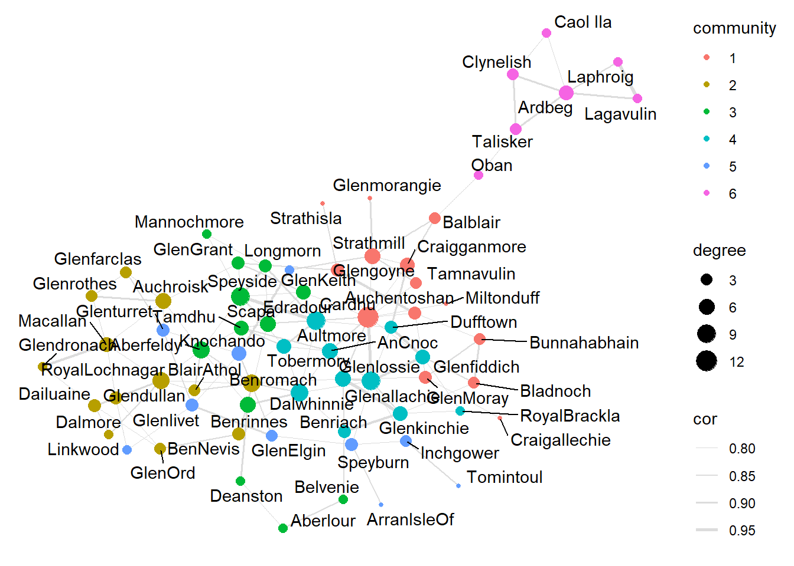

Chapter: 10 network analysis
#install.packages("data.table")
#install.packages("igraph")
# ライブラリコマンドでの読み込みは毎回必要
library(tidyverse)
library(data.table)
library(igraph)
library(tidygraph)
library(ggraph)
#getwd() # 現在の作業ディレクトリを確認
#setwd("D:/Offline_folder/Tokai/Tokai_DataAnalysis/dataanalysis") # 作業ディレクトリの変更10.1 ネットワーク分析
人間関係、企業間の関係など、様々な分野で活用される、グラフ理論をベースとした分析手法。
#ウイスキーデータの取得
whiskies<-data.table::fread("http://outreach.mathstat.strath.ac.uk/outreach/nessie/datasets/whiskies.txt",header=TRUE)
#各蒸留所間の相関係数を算出
cor.mat<-whiskies %>%
select(Body,Sweetness,Smoky,Medicinal,Tobacco,Honey,
Spicy,Winey,Nutty,Malty,Fruity,Floral) %>%
t() %>%
cor()
#行名・列名を追加
colnames(cor.mat)<-whiskies$Distillery
rownames(cor.mat)<-whiskies$Distillery
cor.mat[upper.tri(cor.mat,diag=TRUE)]<-NA
#Long formatに変換して相関係数0.8以上に絞り込み
d<-cor.mat %>%
as.data.frame() %>%
mutate(distillerry1 = whiskies$Distillery) %>%
gather(key="distillerry2", value="cor",-distillerry1) %>%
select(distillerry1,distillerry2,cor) %>%
filter(!is.na(cor) & cor >=0.80)## # A tbl_graph: 67 nodes and 135 edges
## #
## # An undirected simple graph with 1 component
## #
## # A tibble: 67 × 1
## name
## <chr>
## 1 Auchroisk
## 2 Benrinnes
## 3 Benromach
## 4 BlairAthol
## 5 RoyalLochnagar
## 6 Speyside
## # ℹ 61 more rows
## #
## # A tibble: 135 × 3
## from to cor
## <int> <int> <dbl>
## 1 1 54 0.824
## 2 2 54 0.842
## 3 3 54 0.855
## # ℹ 132 more rows## [1] 0.061## [1] 0.28## [1] 1## # A tbl_graph: 67 nodes and 135 edges
## #
## # An undirected simple graph with 1 component
## #
## # A tibble: 67 × 2
## name centrality
## <chr> <dbl>
## 1 Auchroisk 174.
## 2 Benrinnes 122.
## 3 Benromach 411.
## 4 BlairAthol 0
## 5 RoyalLochnagar 234.
## 6 Speyside 121.
## # ℹ 61 more rows
## #
## # A tibble: 135 × 3
## from to cor
## <int> <int> <dbl>
## 1 1 54 0.824
## 2 2 54 0.842
## 3 3 54 0.855
## # ℹ 132 more rows## # A tbl_graph: 67 nodes and 135 edges
## #
## # An undirected simple graph with 1 component
## #
## # A tibble: 135 × 4
## from to cor importance
## <int> <int> <dbl> <dbl>
## 1 1 54 0.824 79.3
## 2 2 54 0.842 42.9
## 3 3 54 0.855 54.2
## 4 4 54 0.855 15.5
## 5 5 54 0.802 63.9
## 6 6 54 0.827 82.7
## # ℹ 129 more rows
## #
## # A tibble: 67 × 1
## name
## <chr>
## 1 Auchroisk
## 2 Benrinnes
## 3 Benromach
## # ℹ 64 more rows## # A tbl_graph: 67 nodes and 135 edges
## #
## # An undirected simple graph with 1 component
## #
## # A tibble: 67 × 2
## name community
## <chr> <fct>
## 1 Auchroisk 2
## 2 Benrinnes 3
## 3 Benromach 2
## 4 BlairAthol 2
## 5 RoyalLochnagar 2
## 6 Speyside 3
## # ℹ 61 more rows
## #
## # A tibble: 135 × 3
## from to cor
## <int> <int> <dbl>
## 1 1 54 0.824
## 2 2 54 0.842
## 3 3 54 0.855
## # ℹ 132 more rowsg3 %>%
mutate(degree=degree(g3)) %>%
ggraph(layout="kk")+
geom_edge_link(aes(width = cor),
alpha=0.8,
colour="lightgray")+ #エッジの追加
scale_edge_width(range=c(0.1,1))+ #太さの調節
geom_node_point(aes(colour=community,size=degree))+ #ノードの追加
geom_node_text(aes(label=name),repel=TRUE)## Warning: Using the `size` aesthetic in this geom was deprecated in ggplot2 3.4.0.
## ℹ Please use `linewidth` in the `default_aes` field and elsewhere instead.
## This warning is displayed once every 8 hours.
## Call `lifecycle::last_lifecycle_warnings()` to see where this warning was
## generated. ##参考 https://www.slideshare.net/MitsunoriSato/tokyor32-network-analysis-24442516 https://www.slideshare.net/kashitan/tidygraphggraph-ver-152368322 https://www.slideshare.net/kashitan/ss-238547900 https://qiita.com/saltcooky/items/4e55d97c5e86dfb208cd